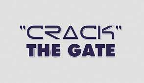
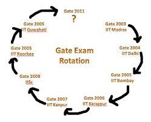
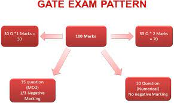
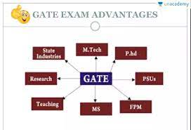

1. HOW TO CRACK THE GATE
1.Know the Syllabus.
2. Identify the Pattern of the Exam.
3. Know About the Pattern of the Questions.
4. Make a Proper Timetable for Preparation.
5. Standard Textbooks Coupled with Online Resources.
6. Previous Years Question Papers And Test Papers.
7. Take Up Mock Tests.
8. Make Short Notes.
9. Enrolled In a Good GATE Coaching Institute.

2.WHAT TO PREPARE
According to the Syllabus we need to prepare for exam and we should preplanned about
exam. How to Prepare for GATE 2022? This is probably your current state of mind
if you are taking the popular GATE 2022. Every year, lakhs of engineering aspirants
go that extra mile to crack the tough Graduate Aptitude Test in Engineering (GATE).
It is a popular entrance exam and a great opportunity for students to pursue
post-graduate courses in some of the top engineering colleges.
It is also a gateway for students to land lucrative PSU jobs.
Every year, lakhs of engineering aspirants compete for the GATE exam,
therefore, it becomes very important for candidates to start their preparation
early to stay ahead in the race.
Since GATE is a highly competitive entrance exam, students need proper guidance for
its preparation. We have some of the best GATE 2022 preparation tips that you can use
to qualify for GATE in your first attempt.
3.HOW TO PREPARE
Step 1:SYLLABUS
GATE is an exam where syllabus is vast. Almost 4 years of syllabus is asked in a single exam.
So before starting preparation of GATE, it is highly recommended to understand the syllabus first.
You can download the syllabus from official website of IITs.
Step 2:PREPARATION SOURCE
It is very important to learn what is right. Standard reference books are a good source of course.
It is very good to read standard books if you are self-preparing and you have ample time in hand.
But since there is less than 12 months for GATE 2019, we would not suggest you to go for standard
reference books.
4.CYCLE OF GATE
- GATE exam will be conducted online (Computer Based Test (CBT)) for all the eligible candidates
at different designated centers.
- GATE Aspirants are not allowed to write ONE or TWO subject
papers.
- TWO subject Paper combinations have to be chosen from the given list of combinations of papers by
the GATE conducting body.

5.DO'S AND DONT'S FOR GATE
HERE IS FEW LINES ABOUT DO'S AND DONT'S IN GATE
IF YOU FOLLW THE BELOW GIVEN DO'S AND DONT'S YOU CAN CRACK THE GATE EASILY AND SORE GOOD GRADE
(i)DO'S FOR GATE
- Try to clear your concepts by solving questions.
- Refer the GATE syllabus and study topic by topic and then solve objective questions.
- Develop the art of adopting tricks for solving objective questions.
- Solve previous years GATE questions. Analyze and solve questions from different concept, which
would enable you to learn new concepts.
- Solve questions from related topics form other subject of GATE papers and IES questions.
- Cover every topic so that at least you can attempt easy questions.
- Keep your formula list ready so that you can go for quick revision before the actual exam.
(ii)DONT'S FOR GATE
- Don’t read too many books only refer reference books.
- Don’t believe in Indian publisher’s books, as there are very few good books in market.
- Don’t spend much time in reading theories, try to build concept only, as concept is the king in GATE.
- Don’t leave any topic; try to cover every topic as it would help to solve at least easy questions.
- Don’t refer too many book for solving objective question, rather you solve questions from GATE and IES.
- Don’t solve many questions, solve only quality questions.
- Don’t ignore Mathematics as one can score high marks in it.
6.TIPS FOR GATE
- Practice calculation on a calculator to increase your speed
during exam.
- Pay extra attention to question you answer incorrectly.
- Focus on key concepts.
- Make small notes for important topics you are likely to forget.
- Solve question from diffrent books.
- Keep a list of formulae to revise.
7.ABOUT GATE EXAM
The Graduate Aptitude Test in Engineering is an examination that primarily tests the comprehensive understanding of various undergraduate subjects in engineering and science for admission into the Masters Program and Job in Public Sector Companies. Wikipedia
Full exam name: Graduate Aptitude Test in Engineering (GATE)
Administered by: Indian Institutes of Technology
Language: English
Score / grade validity: 3 years (GATE 2014 onward)
Year started: 1983 (38 years ago)
Qualification rate: 18.8% (in 2020)

8.BENIFITS OF GATE
- Research Your Gate score is validated fortwo years.
- Can join foreign universities after your GATE exam.
- Job opportunities A sector.
- PSU sector.
- Teaching job.
- Foreign Companies.
- 100 percent job assurance.
- Sector.
- opportunities for sponsorsship.
